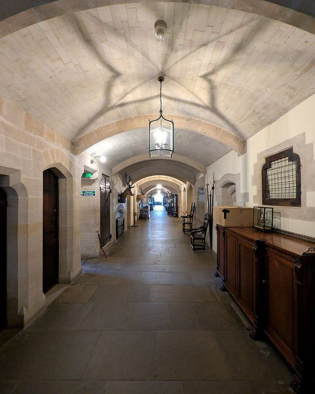
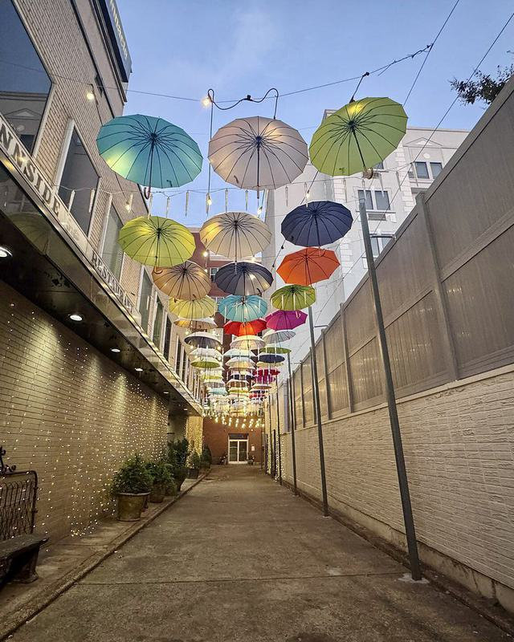
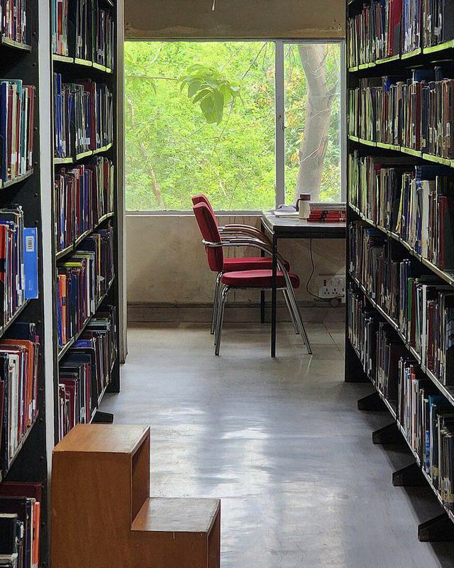
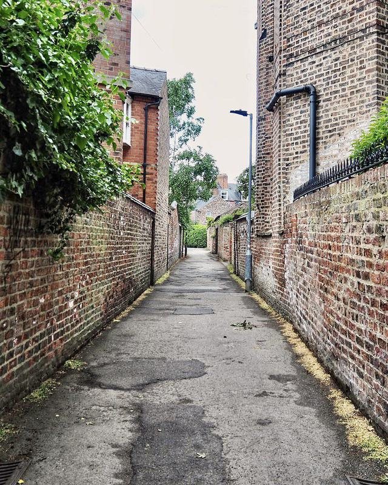
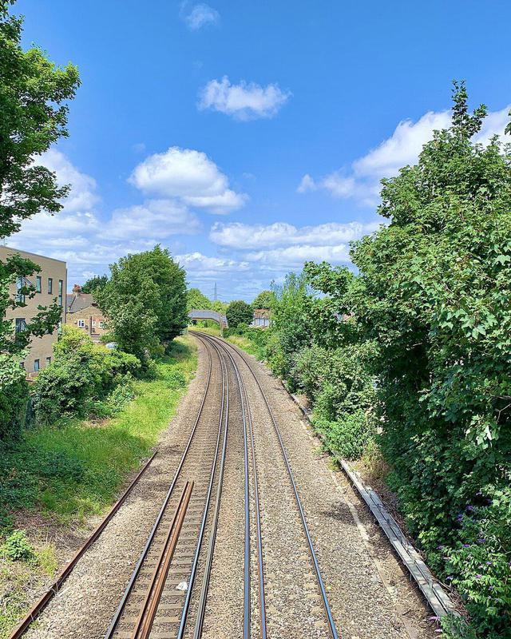
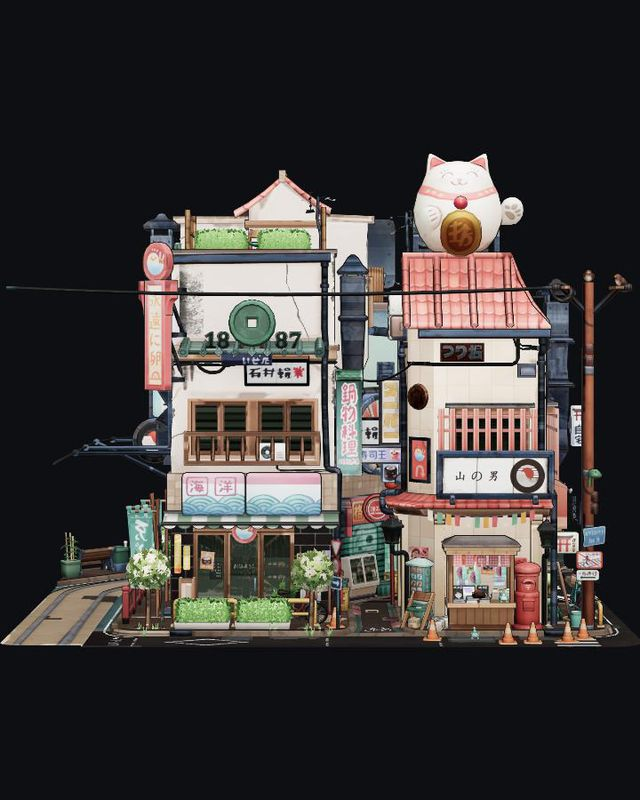

How it works
Three steps, all inside your browser.
- 01
Depth from a photo
A neural network running on your machine estimates how far away every point in the picture is, and turns it into a 3D surface.
- 02
Where are your eyes?
Your webcam tracks your irises. They are almost the same size in everyone, so your distance from the screen is measured in real centimetres.
- 03
Screen becomes glass
Every frame is redrawn for your exact eye position. The screen edge acts like a window frame, hiding and revealing the scene as you move.
Nothing leaves your computer.
- Photos and camera feed stay on your device
- No server, no account, no tracking
- Open source under the MIT license
Samples · photos and .glb 3D models
Pick a scene and look inside.

Vaulted corridor
Umbrella alley
Library
Brick alley
Railway .glb · 3D model
Littlest TokyoAlso works with 3D models
Deep Window opens .glb files too, like the Littlest Tokyo sample above. In Diorama view a room fills your screen edge to edge, so the screen becomes its fourth wall. Drop your own into the app: small objects float just behind the glass; rooms and landscapes open at life size and you can walk through them with WASD. Up to 100 MB.
For the strongest effect: go full screen, turn on the camera, close one eye and slowly slide your head sideways. Photos with clear depth work best: corridors, streets, a room seen through a doorway. Chrome or Edge recommended; the depth model downloads once on first use.